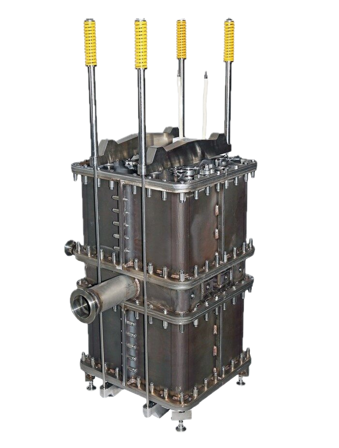
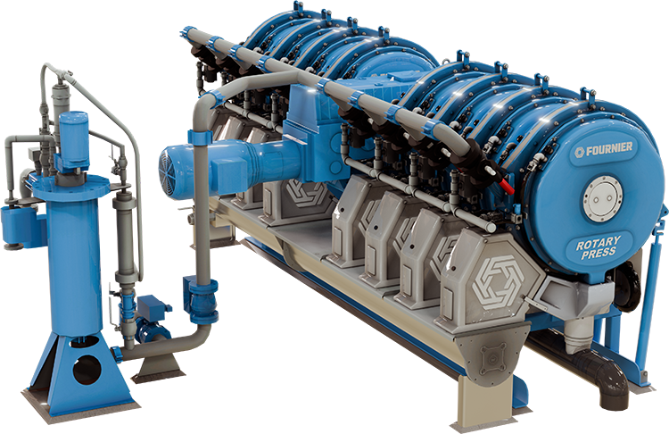

Cada fabricante que representamos aporta una especialidad distinta dentro del ciclo termoenergético e industrial. Esto es lo que hace cada uno.


Fabricante estadounidense de calderas industriales a medida, con sede en Kansas y más de un siglo de trayectoria (desde 1917). Diseña y construye cada caldera bajo pedido, priorizando piezas no propietarias que facilitan el abastecimiento de repuestos y reducen los tiempos de parada.

Fabricante estonio de celdas de óxido sólido (SOFC/SOEC) de alta eficiencia, clave para la producción de hidrógeno verde y la generación de energía libre de emisiones.

Compañía estadounidense de propiedad de sus empleados y líder mundial en transferencia de calor y enfriamiento evaporativo, con manufactura y oficinas en todos los continentes.


Fabricante belga especializado en cromatografía de gases y analizadores en línea, con más de 50 años de experiencia y distribución en más de 20 países. Sus equipos miden trazas e impurezas de gases industriales de alta pureza con precisión a nivel de partes por billón.

Constructor y fabricante de equipos industriales de Quebec, Canadá, especializado en deshidratación de lodos municipales e industriales y en manejo de sólidos a granel.
Contáctenos y le ayudamos a especificar la solución adecuada para su proceso.
Solicitar una cotización